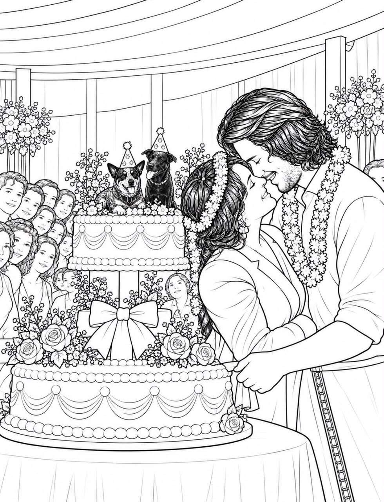
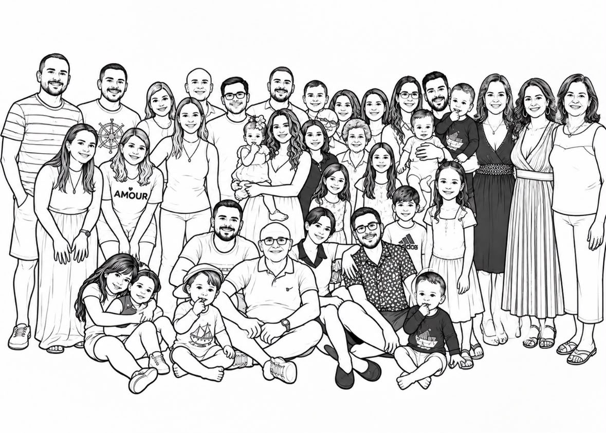
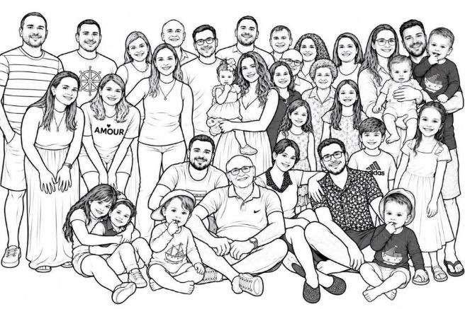

O bolo de casamento da minha neta Thais
“Se eu pudesse voltar no tempo, faria o bolo de casamento da minha neta Thais e do Willian…”

Há desejos que nascem da saudade de um tempo que passou. Outros vêm do amor tão grande que gostaríamos de poder voltar atrás, não para mudar o que aconteceu, mas para viver novamente aquilo que a vida não nos permitiu experimentar por inteiro.
Quando Zelinda diz que gostaria de ter feito o bolo de casamento da neta Thais e de Willian, há muito mais do que uma receita nessa vontade. Há o desejo de estar presente, de participar com as próprias mãos de um dos dias mais importantes da vida de sua neta. Há a vontade de preparar a massa, acompanhar o forno, cuidar da cobertura e, finalmente, entregar aos noivos um bolo feito de ingredientes, tempo e amor.
Porque, para quem passou a vida cozinhando para a família, preparar um bolo nunca foi apenas misturar farinha, ovos, açúcar e manteiga. Era uma maneira de cuidar. Uma forma de dizer, sem precisar de muitas palavras: você é importante para mim.
E talvez seja por isso que esse desejo de Zelinda tenha tanta força. Ela não queria simplesmente fazer um bolo de casamento. Queria colocar um pedacinho de si mesma na celebração de Thais e Willian, assim como tantas vezes colocou seu carinho nas receitas que acompanharam a história da família.
Mas existe outra parte dessa história, igualmente bonita. Thais também tem um desejo guardado no coração: se pudesse voltar no tempo, gostaria de conhecer a juventude da avó.
Queria encontrá-la naqueles anos em que a vida seguia outro ritmo, quando o forno a lenha era o coração da cozinha e os aromas das receitas preparadas por Zelinda se espalhavam pela casa. Gostaria de estar ali, pertinho dela, observando suas mãos trabalharem, descobrindo como uma massa chegava ao ponto certo, como uma receita ganhava sabor e como tantos pratos se transformavam em lembranças que atravessariam gerações.
Mais do que aprender a cozinhar, Thais queria conhecer a mulher por trás das receitas.
Queria ouvir suas histórias, descobrir suas experiências, conhecer os pequenos segredos que não estavam escritos em cadernos e que nenhuma medida de xícara ou colher seria capaz de explicar. Queria aprender aquilo que só se transmite quando alguém tem a oportunidade de ficar ao lado de quem sabe, olhar com atenção e guardar cada gesto na memória.
Há ensinamentos que não cabem em uma receita. Passam de uma mão para outra, de uma geração para a seguinte, quase sempre sem que ninguém perceba o tamanho do tesouro que está sendo transmitido.
E, na imaginação de Thais, existe uma cena que reúne todos esses desejos: Zelinda preparando o bolo de seu casamento com Willian.
Seria um bolo de dois andares, feito pelas mãos experientes da avó e decorado com dois convidados muito especiais no topo: Bartolomeu e Ella Maria, os cachorrinhos que também fazem parte da história do casal.
É fácil compreender a beleza dessa imagem. O bolo reuniria a tradição e a novidade, a experiência e a juventude, a história de uma avó e os primeiros capítulos de uma nova família. No alto, Bartolomeu e Ella Maria representariam também esse universo de afetos que se constrói ao redor de um casal e que torna cada família única.
E Zelinda estaria ali, participando daquela celebração de uma maneira que só ela poderia fazer: oferecendo algo preparado com suas próprias mãos.
Talvez ninguém precisasse explicar o significado daquele bolo. Ele estaria inteiro no gesto de prepará-lo, na escolha dos detalhes, no cuidado de cada etapa e na alegria de entregá-lo aos noivos. Seria uma lembrança que não se compraria pronta em uma confeitaria, porque seu verdadeiro valor não estaria na decoração, no tamanho ou na receita. Estaria na pessoa que o fez.
Mas o tempo tem suas próprias regras. Não nos consulta antes de seguir adiante, nem nos oferece a possibilidade de repetir todos os momentos. Quando percebemos, algumas ocasiões já passaram, certas oportunidades ficaram para trás e os sonhos precisam encontrar outras maneiras de continuar vivos.
Ainda assim, há algo que o tempo não consegue apagar: o significado das coisas que amamos.
O desejo de Zelinda revela a vontade de participar de cada capítulo importante da vida de sua neta. O sonho de Thais revela o quanto gostaria de ter conhecido mais profundamente a juventude da avó, de ter compartilhado com ela aqueles momentos cotidianos que, vistos de longe, parecem pequenos, mas que se tornam preciosos quando já não podem ser vividos da mesma maneira.
Uma gostaria de ter preparado o bolo. A outra gostaria de ter estado ao lado dela, aprendendo, ouvindo e descobrindo.
No fundo, as duas desejam a mesma coisa: mais tempo juntas.
E talvez seja justamente aí que essa história encontre seu sentido mais profundo. Às vezes, o amor se manifesta no desejo de oferecer alguma coisa. Outras vezes, aparece na vontade de receber: uma receita, uma história, um ensinamento, uma tarde na cozinha, a oportunidade de conhecer quem veio antes de nós.
São desejos diferentes, mas que se encontram no mesmo lugar: o afeto que une uma avó à sua neta.
As receitas de família têm essa capacidade extraordinária de guardar o que as palavras nem sempre conseguem explicar. Uma massa preparada muitas vezes conserva a lembrança de quem a ensinou. Um bolo servido em uma festa pode trazer de volta a cozinha de outros tempos. Um aroma pode aproximar gerações que nunca tiveram a oportunidade de compartilhar a mesma mesa.
Por isso, as receitas de Zelinda não pertencem apenas ao passado. Continuam presentes sempre que seus filhos, netos e bisnetos preparam alguma de suas delícias, recordam suas histórias ou descobrem, em um gesto simples, a herança que receberam.
O forno a lenha pode ter ficado em outra época. A juventude de Zelinda não pode ser visitada como quem abre uma porta. E o bolo de casamento de Thais e Willian não precisa ter sido preparado por ela para que o amor da avó esteja presente naquela união.
Porque o legado de Zelinda não se limita àquilo que suas mãos foram capazes de produzir. Está também naquilo que despertou no coração de quem veio depois dela: a vontade de conhecer suas origens, preservar suas histórias e manter vivas as tradições que dão identidade a uma família.
Se pudesse voltar no tempo, Thais gostaria de se sentar ao lado da avó naquela cozinha. Observaria cada movimento, ouviria cada história e talvez nem percebesse que, enquanto aprendia a preparar um bolo, estaria recebendo algo muito maior: uma parte da vida de Zelinda.
E, se Zelinda pudesse voltar no tempo, talvez encontrasse na cozinha a oportunidade de preparar aquele bolo de dois andares, enfeitado com Bartolomeu e Ella Maria, para celebrar a felicidade da neta.
Mas a vida não nos concede todos os encontros que imaginamos. Em compensação, permite que alguns amores continuem crescendo mesmo depois que certas oportunidades passaram.
É por isso que vale a pena registrar essas histórias. Para que os bisnetos de amanhã conheçam a mulher que veio antes deles. Para que as receitas não sejam apenas listas de ingredientes, mas caminhos de volta às pessoas que lhes deram significado. Para que Thais, Willian e toda a família possam reencontrar, nestas páginas, um pouco daquilo que Zelinda sempre ofereceu: cuidado, presença e amor.
No fim, talvez o bolo mais importante não seja aquele que ficou na imaginação de uma avó ou no sonho de uma neta. Talvez seja o grande bolo invisível que Zelinda passou a vida preparando, sem receita escrita e sem decoração especial: o bolo feito de encontros, lembranças, ensinamentos e gerações inteiras reunidas ao redor de sua história.
Esse não precisa voltar ao forno.
Continua crescendo no coração de sua famíli


Até as cenas dos próximos livros…